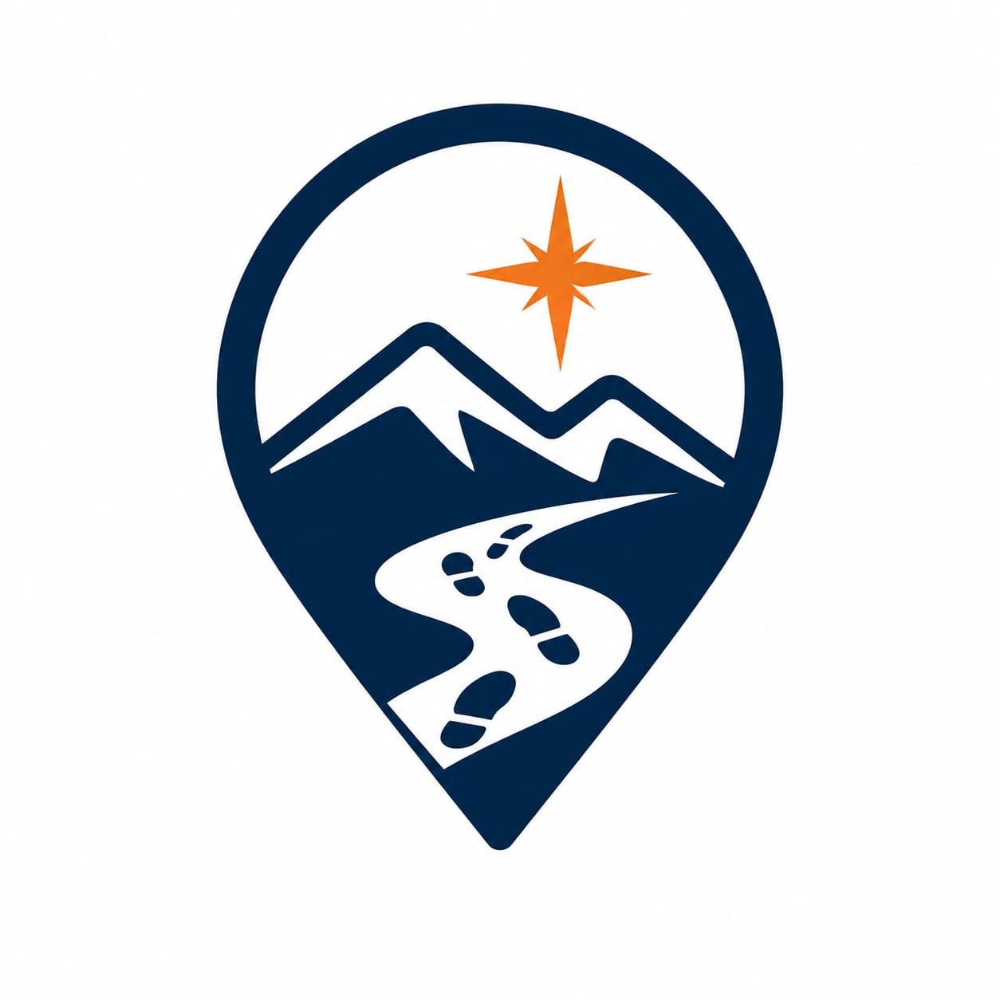

Atlas y Diario de Exploración Territorial de Tierra del Fuego

Atlas y Diario de Exploración Territorial · VolverAlSur
Registro de visitas territoriales, estampillas y notas de campo
Marco institucional, fuentes cartográficas y privacidad soberana
Los datos geoespaciales y toponímicos provienen de la Infraestructura de Datos Espaciales de Tierra del Fuego (IDETDF), el Instituto Geográfico Nacional (IGN) y el Centro Austral de Investigaciones Científicas (CADIC-CONICET).
Esta aplicación no recopila telemetría, identificadores ni geolocalización en servidores remotos. Todas las visitas marcadas, huellas y notas de campo quedan almacenadas de manera 100% local en este navegador mediante localStorage.
Código fuente distribuido bajo licencia permisiva MIT. Cartografía y datos de base bajo licencias OpenStreetMap (ODbL) y contenidos educativos Creative Commons CC BY-SA 4.0.
Compromiso ecológico y honorífico en el territorio fueguino
Registrá al menos 2 hitos de fragilidad Alta o Muy Alta en tu pasaporte para obtener el blasón de Guardián Austral.
Tránsito pedestre suspendido por protocolo de preservación ambiental
Estrés hídrico detectado (Anomalía SAR). Riesgo de incendio.
Los turbales son esponjas milenarias que retienen el agua de Ushuaia y capturan carbono vital. Durante períodos de sequía extrema detectados por radar satelital Sentinel-1 SAR, la pisada compacta el musgo Sphagnum destruyendo su estructura e incrementa drásticamente el riesgo de incendios subterráneos.
Te sugerimos redirigir tu expedición hacia senderos con pasarelas habilitadas y monitoreo permanente:
Tus sellos e insignias 3D recolectadas
Proyecciones territoriales basadas en series históricas regionales y monitoreo ecosistémico (IANIGLA / CADIC-CONICET / NASA POWER).
¿Cuántos días al año se queda sin agua el suelo?
Hielo que nos queda para beber y abastecer a la ciudad